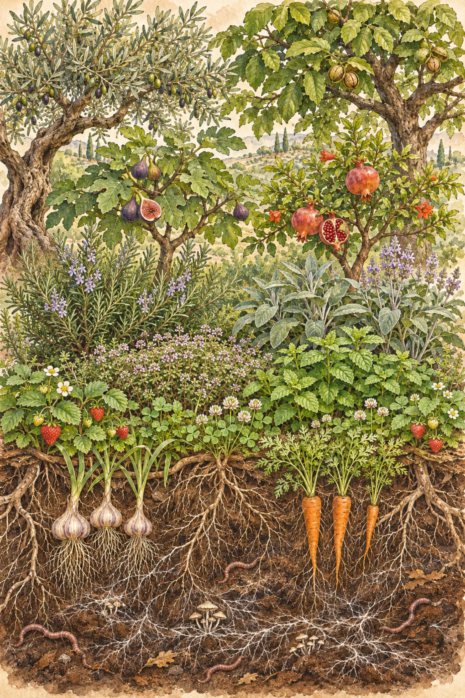

Doğayı taklit eden bir bahçe.
Permakültür, doğal ekosistemlerin işleyişini örnek alarak kendi kendini besleyen bahçeler tasarlama yöntemi. Biz 2017'den beri bu tarlayı sürmüyor, ilaçlamıyor, dışarıdan gübre getirmiyoruz. Onun yerine gözlemliyor, suyu tutuyor, toprağı besliyor ve bitkileri birbirine yoldaş olacak şekilde yerleştiriyoruz.
Her kararın altındaki üç soru
Toprağa özen
Bu karar toprağı, suyu ve bahçedeki canlıları daha zengin mi bırakıyor?
İnsana özen
Bahçede çalışanları, komşuları ve ziyaretçileri besliyor mu?
Adil paylaşım
Fazlayı tohum, ürün ve bilgi olarak geri veriyor muyuz?
Evden yabana altı halka
Sık ilgilendiğimiz her şey eve yakın, kendi başına yaşayabilen her şey uzakta. Bir halkaya dokunun.
Yedi katman, tek bir orman
Zeytinliğimiz tek katlı bir tarla değil. Ağaçlardan köklere kadar her katman bir diğerini besliyor.

- 12 mTepe örtüsü. Zeytin, ceviz, kestane. Yazın gölge, kışın yaprak malçı.
- 4 mAlçak ağaçlar. İncir, nar, ayva, badem. Kuşların ve arıların katmanı.
- 1,5 mÇalılar. Biberiye, adaçayı, lavanta, kuşburnu. Sabunlarımız ve çaylarımız buradan.
- 60 cmOtsu katman. Kekik, nane, domates, fesleğen.
- 10 cmYer örtücüler. Çilek, yonca, sürünücü kekik. Toprak hiç çıplak kalmaz.
- −30 cmKökler. Sarımsak, pırasa, havuç, turp.
- yukarıSarmaşıklar. Asma ve fasulye. Gölge Kafe'nin çatısı.
On iki tasarım ilkesi, bahçedeki karşılıkları
David Holmgren'in permakültür ilkelerini her gün nasıl uyguladığımız.
- Gözlemle ve etkileşİlk yıl hiçbir şey dikmedik. Suyun, rüzgârın ve güneşin yolunu izledik.
- Enerjiyi yakala ve depolaKontur hendekleri ve 30 tonluk yağmur suyu deposu.
- Ürün alİkinci yıldan itibaren bahçe kendi masrafını karşılıyor.
- Kendini düzenle, geri bildirimi kabul etHer pazartesi bahçe günlüğüne ne işe yaramadığını da yazıyoruz.
- Yenilenebilir kaynakları kullanGüneş paneli, eşek gübresi, kendi tohumumuz.
- Atık üretmeZeytin karası komposta, kahve telvesi solucanlara gidiyor.
- Desenden ayrıntıya tasarlaÖnce eğimi ve suyu çizdik, bitkileri en son yerleştirdik.
- Ayırma, birleştirHer zeytinin çevresinde bakla, biberiye, kekik ve lavanta loncası var.
- Küçük ve yavaş çözümlerAdımız da buradan geliyor: âheste.
- Çeşitliliği kullan ve değer verBahçede 180'den fazla bitki türü kayıtlı.
- Kenarları kullanHendek kenarları bahçenin en verimli şeritleri.
- Değişime yaratıcı yanıt ver2024 kuraklığından sonra kuraklığa dayanıklı tohumlara geçtik.
2017'den bugüne rakamlarla
Toprağı ölçmeye ilk günden başladık. Her sonbahar aynı altı noktadan numune alıyoruz.